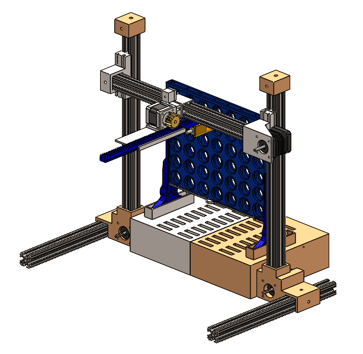
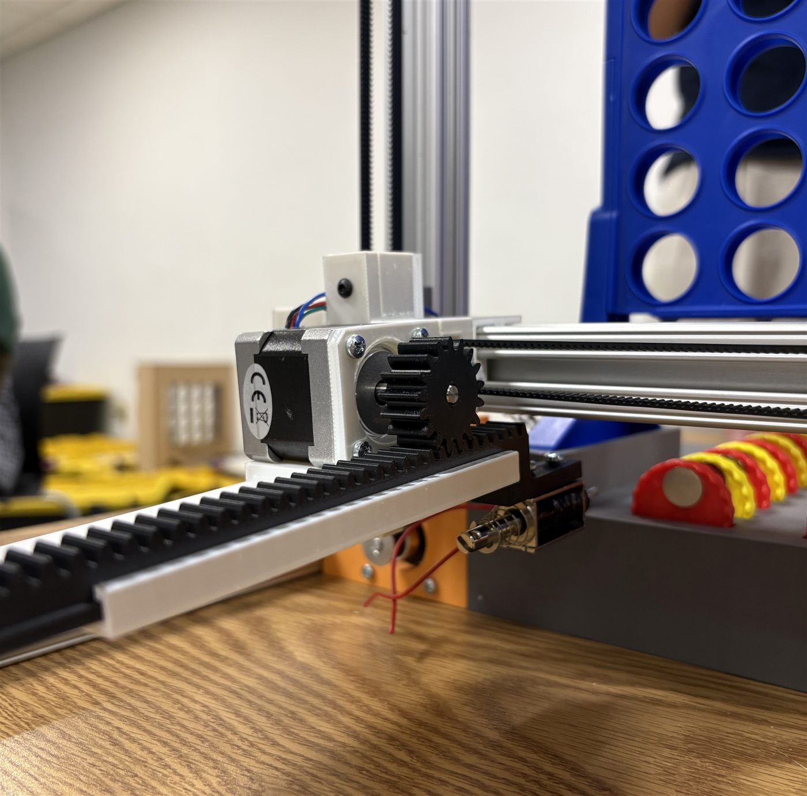
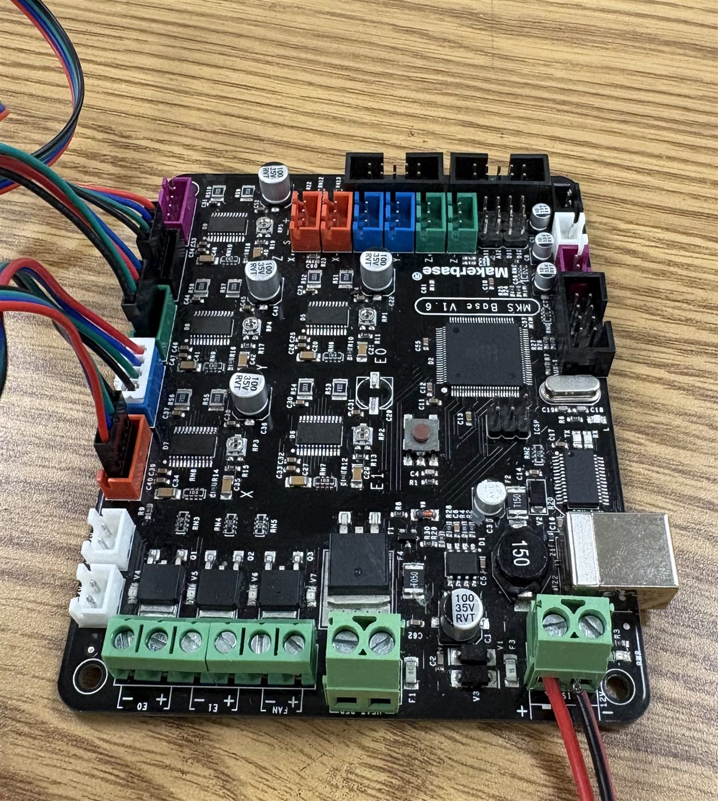
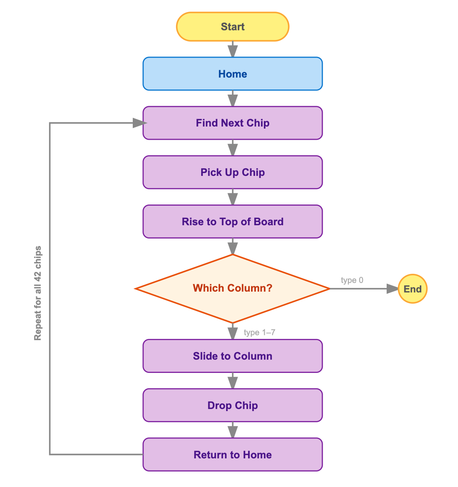
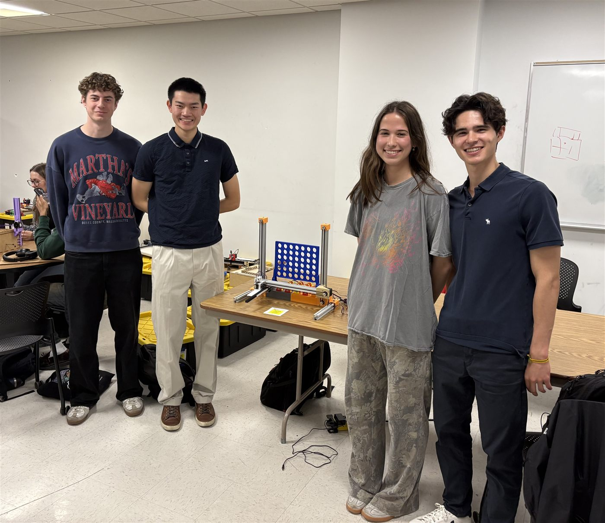
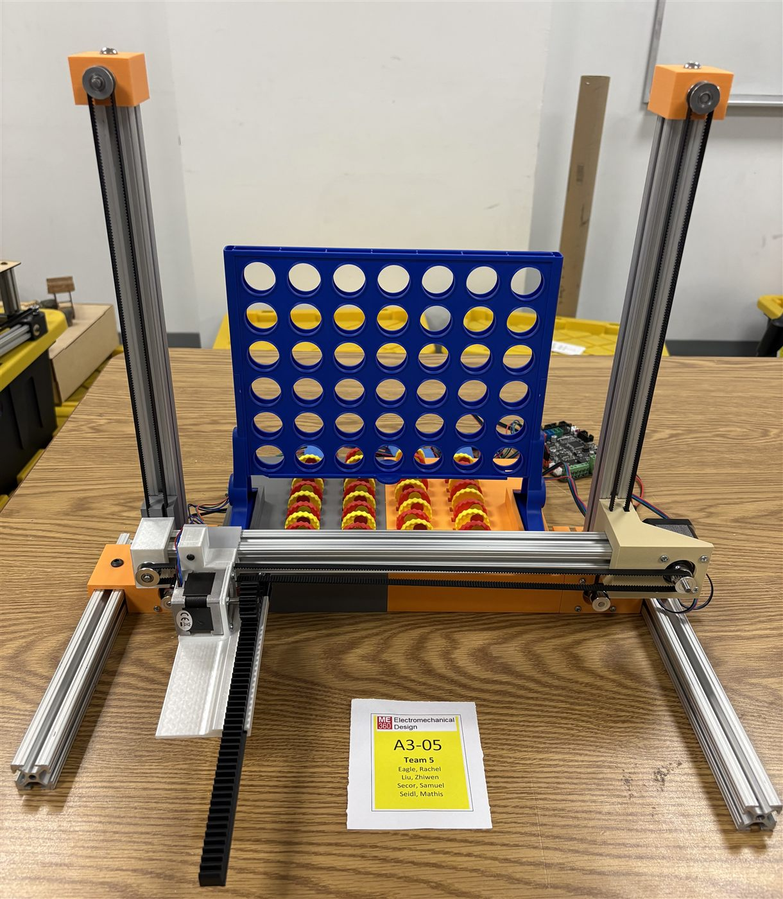

Spring 2026
Autonomous Connect 4
Demo
See it in action
Objective
Project objective & task
This project presents an autonomous Connect-4 playing device, inspired by the mechanism of a 3D printer. The system operates with 3 degrees of freedom across the X, Y, and Z axes. The concept reimagines the classic game of Connect-4 in an automated format, where the only required human interaction is entering a desired column number into the MATLAB command window.
We were tasked with building a 2.5 DOF system capable of performing a task of our choice, while being compact and lightweight enough to fit in a backpack. The system also needed to be fully or partially disassembled for transport and reassembled by a single person in under 10 minutes.
CAD
Design overview
As an initial design step, I developed a full CAD assembly with the goal of making the system as compact as possible. Modeling the design virtually before assembling saved our team significant time and money. The assembly primarily features motor mounts for three NEMA 17 and one NEMA 14 stepper motor, the end effector, a base housing that stores the 42 game chips, the Connect 4 board, and five aluminum extrusion beams.
The most challenging aspect was designing the carriages that slide along the beams. Since the system is driven by belt-driven linear actuators, the carriages needed to anchor one end of the belt while allowing the other end to pass through freely. Additionally, the carriages had to precisely house the stepper motors and the aluminum beams. Any slight dimensioning error would introduce misalignment.

Z-Axis
End effector
Our Z-axis end effector is rack-and-pinion inspired, responsible for picking up and dropping the game chips. The pinion is press-fitted onto the shaft of the NEMA 14 stepper motor and drives the rack linearly. A magnet mounted on the front of the rack collects the chips, which we glued with metal pieces for magnetic adhesion.
The chip release mechanism required significant troubleshooting. Our initial approach used a linear actuator to collide the chip against a back wall upon power-off, releasing it into the board — that was unsuccessful, so we attached a screw onto the magnet to lower the magnetic field, but the chip still wouldn't fall off. Ultimately, we realized we could just disregard the linear actuator completely and place the chip into the slit enough so that if you reverse the rack, the chip naturally falls in.

Electronics
Smart wiring
We chose the MKS Base V1.6, produced by Makerbase, to power our system. This board integrates an Arduino Mega microcontroller and five stepper motor drivers onto a single PCB, keeping our wiring organized and compact. We connected our four NEMA stepper motors directly to the motor driver pins and powered the entire system with a 12V external power supply.

Code
Skeleton code
The code is written in MATLAB and communicates with the MKS board using G-code commands. A predefined array of 42 chip coordinates guides the magnet to each chip, which it picks up using sequential X, Y, and Z movements. The user is then prompted to input a target column, and the system moves the chip to the wanted column. This loop repeats for all 42 chips or until the user quits.

Results
Smart wiring, solid performance
Overall the system performed well. The motors ran smoothly, the belts held up without any issues, and the carriages slid cleanly along the beams thanks to careful dimensioning during the design phase. Electrically the system ran flawlessly as long as the motors stayed within a certain speed threshold — each cycle ran between 10 and 20 seconds from pickup to drop off. The only area for improvement was chip accuracy, which sat at 85% per game. Chips would slightly twist in their holder, meaning the magnet never grabbed the metal piece from the exact same spot, occasionally throwing off the drop.

Project Image
